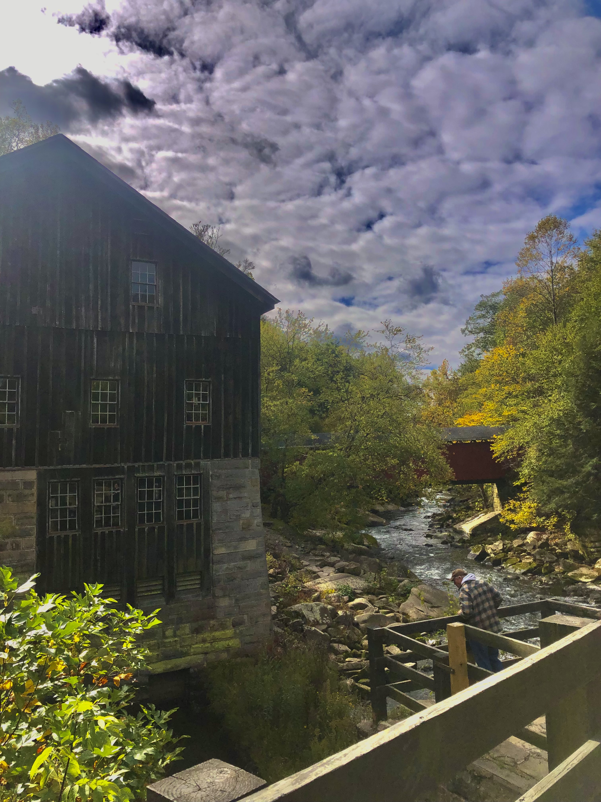

McConnells Mill is the escape to nature everyone needs. The park is located around an hour north of Pittsburgh and 20 minutes from Slippery Rock, PA. With a plethora of unique hiking trails and attractions, McConnells Mill is a must-see for anyone in the area.

Overall, I really enjoyed McConnells Mill. Compared to much of the hiking on the eastern side of PA, it was far more unique. The large amount of boulders and waterfalls make it scenic no matter the season, although some trails can be dull if they lack boulders. The ability to rock climb adds to the adventure!
7. Grindstone Falls
Moderate
Out and Back
Short
<
Length:
Short or Moderate
Kildoo Falls is by far the most unique waterfall to grace McConnells Mill. The waterfall flows over an overhang allowing hikers to venture under the falls. Interestingly, under the falls there are multiple handprints on the cave wall, it is unknown as to how long or why these prints are here.
There are many routes to Kildoo Falls, for a shorter hike park at the Mill and for a longer hike park near the Alpha Falls trailhead or the parking lot directly after.
Total Score: 8/10
Did You Know?
42% of americans are vitamin D deficient. Symtpoms include
- Muscle Pain
- Bone Pain
- Muscle Tremors/Spasms
- Muscle Weakness
Be sure to hit the trails and get in your daily dose of vitamin D!
Length:
Short
Reaching the mill is fairly easy, you can either park at the mill or park at any nearby parking lot. The hike should take no longer than 15-45 minutes to reach the mill depending on where you park such as the Alpha Falls, Picnic Area, or the lot in between Alpha Falls and the Picnic Area.
The mill is the most highly trafficed portion of the park, so expect to see plenty of other hikers on the trails nearby.
The park offers tours of the historic mill at 1 and 2PM, however. The historic gristmill at McConnells Mill State Park is open Memorial Day through late September on Wednesdays through Sundays from 10:30 AM to 3:30 PM.
Total Score: 7.5/10

McConnells Mill Festival
Take a journey through history as you celebrate the historic time period of 1852-1928 when the gristmill used the power of the Slippery Rock Creek to grind the wheat for bread. During this festival you can tour the mill with its original machinary, visit a Civil War envamptment, particpate in arts and crafts demonstrations, and enjoy Bluegrass and Celtic music. Local artists and craftspeople deomstrate their skills and have wares for sale.
Length:
Short
Alpha Falls is the largest waterfall in the park, making it also one of the most visited sections of the park so be prepared for other hikers. The trail to the falls is relatively short, as you enter the Alpha Pass trail you will see a sign on the right that directs you towards the falls. The falls are no more than a 5 minute walk from that point. Alpha Falls are incredibly impressive, without a doubt they're worth a visit! It is difficult to express how these falls make you feel, but I felt as if I was in a different world. Even the atmosphere surrounding the falls is surreal, pictures do not do this attraction justice. If you continue down the Alpha Pass it will bring you to the mill. Alpha pass is also an amazing trail packed with impressive boulders and a cave(of sorts).
Total Score: 8.8/10

6. Rock Climbing: The Kildoo Boulder
Length:
Short
Overall this is a very fun and easy climb. However, before bouldering be sure to have the proper safety equiptment such as pads. As far as I know, this boulder has not been used in the past so it has no name or grade, it is most likely a V0-V1.
To reach the boulder begin to take the trail up to Kildoo Falls, before the trail steeply ascends you will see a few trails that branch off to the right. Take the highest trail for about 10-15 minutes and you will find the boulder.
Total Score: 7/10

Length:
Short
Out of all the trails in McConnells Mill, Grindstone Falls is the most difficult to traverse. The trail is covered in mud and has a few steep declines you have to go down to get to the falls. Fortunately, the trail is easy to follow and short. The falls itself are small but flow well, especially after rain. However, the better the falls flow, the more muddy the trail will be due to the rain. Making your way back up from the falls is the most difficult part of the hike. The walk back is mostly uphill and very steep, paired with mud it is somewhat difficult to walk back up. I highly recommend wearing boots and pants for this trail. Also, the trail has a lot of long grass you will likely be touching so be wary of tics. In conclusion, the trail is decent but the falls are by far the best part of the hike.
Total Score: 6.5/10

Urban Legends
-
Moses Whorton was a caretaker at the mill who died at the turn of the century. It is rumoured he still partols the mill, chasing ill-behaving explorers away. Moses lived in a cottage by the mill back when Thomas McConnel was the owner. To call upon the deceased caretaker, one must honk their car horn next to the mill.
-
A young girl died in an accident at the covered bridge in McConnells mill. If you park on the bridge, turn off your lights and honk you horn three times, her vision appears in your rear view mirror.